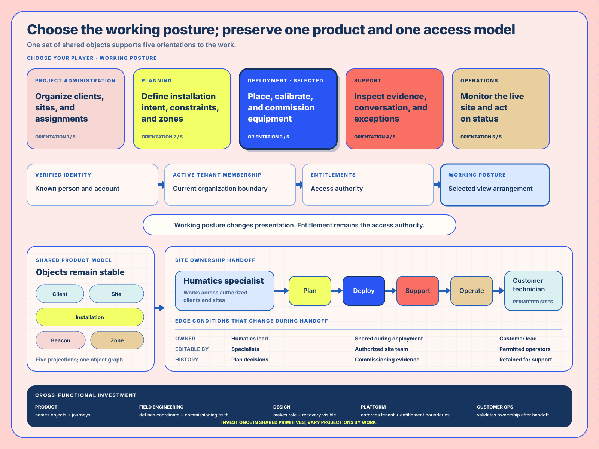
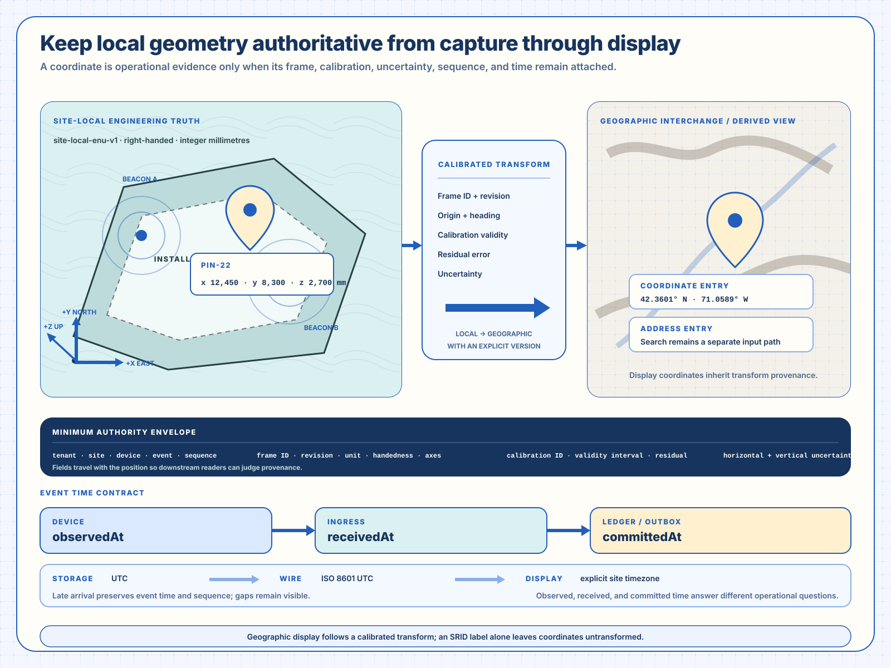
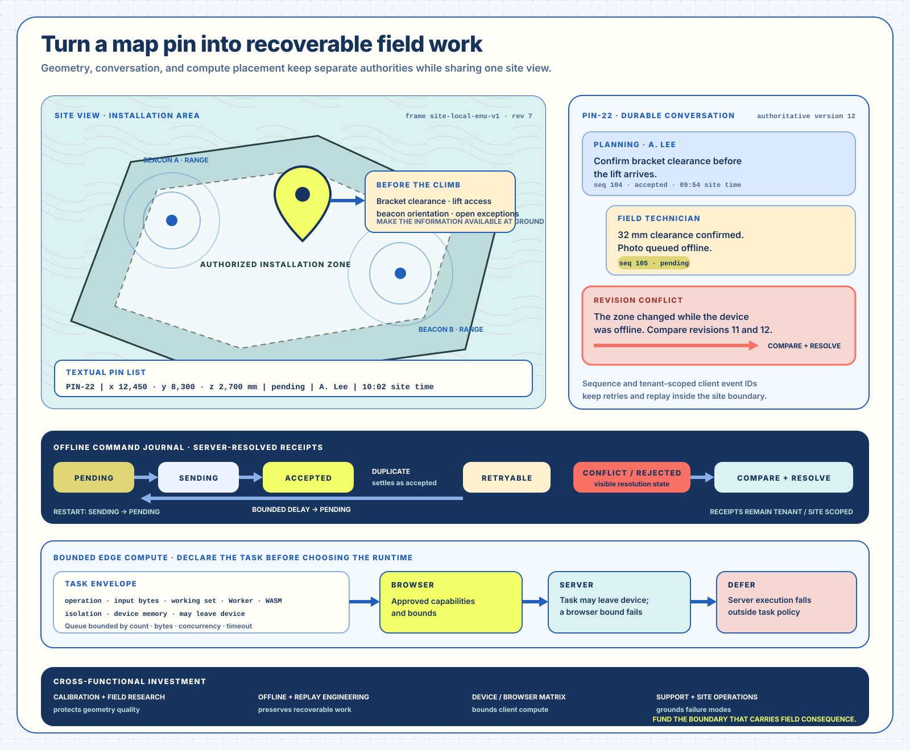

Narrative Architecture
The near-miss, field inquiry, concern language, and working prototype that changed the collaboration.
Narrative Architecture · Solution Architecture · Implementation Architecture · 2018–2019 + contemporary contract reading
From a near-miss demonstration to a shared field-operating model
A precision-location platform could demonstrate compelling technology. Its operating model became legible when the product also showed who planned a site, who installed and calibrated it, who supported exceptions, who operated the live system, and which state each handoff had to preserve.
The near-miss, field inquiry, concern language, and working prototype that changed the collaboration.
Five working entrances, one site-object model, and a handoff from specialist to customer technician.
Historical constraints beside current recoverable contracts, with evidence classes kept separate.
Movement INarrative Architecture · Evidence and ConsequenceFollow the near-miss, inquiry route, and changed product account.
The engagement joined a small agency team with a Series A industrial technology company building submillimeter positioning for ports, warehouses, factories, and construction sites. The product story carried hardware, beacons, site configuration, robot zones, calibration, telemetry, and operating handoff. A polished screen could show the ingredients while leaving the work itself difficult to enter.
Public records establish the financing timeline and amounts. Participants attribute explanatory and trust-building value to the working prototypes during the engagement; their account describes product legibility and the working relationship.
The first executive presentation nearly missed. A product manager asked the question that changed the frame: “How do we manage the sites? And how do we manage the views between the different types of installers?” The question defined two required structures at once: a stable hierarchy for client, site, installation, beacon, and zone; and a legible way for collaborators to enter that hierarchy through their actual work.
The agency cost model made the moment consequential. A multi-person team could consume meaningful budget in a week, so a direction change needed to precipitate into something participants could inspect quickly. Within two days, the work shifted from tactical polish to a connected product architecture.
The PM carried the field inquiry, using concrete questions from design about where people stood, what they carried, what they needed before climbing, and how a site behaved when connectivity dropped. The answers described booms, cherry pickers, scaffolding, calibration, embedded Windows and browser constraints, and a simple priority: put the useful information in reach before the lift leaves the ground.
| Concern cluster | Repeated language | Design response | Ability gained |
|---|---|---|---|
| People and responsibility | Administrator · Planning Engineer · Deployment Engineer · Support Engineer · Operations Manager | Choose Your Player | A collaborator can enter through the work they are trying to accomplish. |
| Place and equipment | Client · site · installation · beacon · zone | Shared site hierarchy | Teams can discuss one operating model across views. |
| Field state | Status · calibration · coverage · location · exception | Site dashboard and map | A technician can see the condition that changes the next move. |
| Coordination | Assign · configure · install · support · monitor | Handoff-aware journeys | Ownership can change while the shared objects retain continuity. |
The welcome surface made the product easier to explain because it required participants to decide who was acting and what they needed next. The site hierarchy and map work made the underlying product discussable across design, product, engineering, field deployment, support, and customer operations. The remembered outcome was trust earned through visible response: the team had heard the problem and could show a coherent route through it.
Movement IISolution Architecture · Working Posture and AccessSeparate working posture from access authority and keep site truth continuous.
The five players describe presentation posture: the work a collaborator is trying to do now. Authenticated identity, active tenant membership, and entitlements remain the access authority. Separating those concerns lets the interface orient people while the permission system remains grounded in established access state.
Organize clients, sites, assignments, and the commercial frame.
Define installation intent, site constraints, geometry, and zones.
Place, calibrate, commission, and hand over equipment.
Inspect evidence, conversation, anomalies, and recovery.
Monitor the live site and act on current status.
A trustworthy role switch changes the presentation while authenticated identity, tenant membership, and entitlements continue to govern access. One shared domain model keeps site objects coherent across the five working projections. Each task-specific projection remains recoverable, and security decisions stay in the access model.

Industrial placement begins in the site’s engineering frame: millimeters, axes, handedness, origin, revision, and calibration. Geographic coordinates are a derived interchange and display view. Address entry and coordinate entry remain separate inputs because they answer different questions. The transform between them carries the provenance required to reconstruct a point.
Time needs the same clarity. Device observation, service receipt, and durable commit are three events. Storage in UTC, wire exchange in ISO 8601 UTC, and display in an explicit site timezone are three representations. Late arrival preserves the original event time and sequence while making the gap visible.

| Population | Investment | Changed work | Enterprise consequence |
|---|---|---|---|
| Product | Name shared objects, journeys, and player postures. | Plan one product through several task projections. | Roadmap decisions can preserve the domain across screens. |
| Field engineering | Define coordinate, calibration, commissioning, and acceptance truth. | Capture conditions once and carry them through handoff. | Placement and coverage remain reconstructable. |
| Design | Make role, status, and recovery visible. | Orient the collaborator before exposing product breadth. | Complexity becomes navigable while one domain model remains intact. |
| Platform engineering | Enforce tenant, entitlement, event, and artifact boundaries. | Serve multiple clients from explicit contracts. | Presentation changes while access and provenance remain coherent. |
| Customer operations | Validate ownership, evidence, and acceptance after handoff. | Operate and recover the site using the same shared objects. | The customer can inherit a working system rather than a project memory. |
Movement IIIImplementation Architecture · State, Authority, and RecoveryPlace historical reconstruction beside current executable contracts without blending them.
The source reconstruction describes a Windows, Internet Explorer, jQuery, SQL Server, WebSockets, local-server, connected-device, and field-network environment. A contemporary architecture reading translates the recurring operating concerns—role clarity, site truth, offline recovery, spatial collaboration, and bounded browser compute—into explicit state, command, and recovery contracts.
Presentation posture
Then · welcome-screen role→Now · tenant-scoped selection state with checkpoint recovery
Site truth
Then · site drawing and lat/lon fallback→Now · frame, unit, calibration, revision, and uncertainty contract
Field collaboration
Then · map annotation and chat→Now · tenant/site-scoped event sequence with compare-and-resolve
Offline work
Then · standalone server and later synchronization→Now · pending, sending, accepted, retryable, conflict, and rejected states
Browser compute
Then · worker-style client processing→Now · browser, server, or defer from capability and policy bounds
Spatial artifacts
Then · CAD and site documents→Now · resumable upload, quarantine, validation, conversion, and progressive delivery
A stale site revision can misplace a beacon. A lost offline comment can strand a lift crew. An ambiguous timezone can shift a maintenance window. A browser that accepts an unbounded artifact can exhaust a field device. The implementation boundary is therefore operational: each contract must preserve enough context for the next person or service to recover the work.
§c.1 · Player selection
Native radio semantics, URL-safe stable IDs, tenant-scoped checkpoints, stale-response handling, and explicit idle, editing, submitting, failed, and committed phases make selection inspectable.
§c.2 · Dashboard boundary
A bounded dashboard contract separates data-transfer shape, tenant-safe read scope, source freshness, and visual preference so a dashboard can explain what it knows and when it changed.
§c.3 · Geometry authority
Tenant, site, actor, geometry, frame, and expected revision travel with each command. A duplicate returns the original receipt; a conflicting revision returns a condition a collaborator can resolve.
§c.4 · Offline journal
Pending, sending, accepted, retryable, conflict, and rejected states preserve intent. Restart returns interrupted sends to pending; compare-and-resolve retains human judgment at a real conflict.
§c.5 · Browser edge compute
Operation, bytes, working set, worker and WASM support, isolation, device memory, permission to leave the device, concurrency, and timeout determine placement.
§c.6 · Spatial artifact lifecycle
Resumable upload, quarantine, validation, conversion, progressive delivery, and cost assumptions make CAD handling an operating lifecycle rather than a single request.

| Architecture move | 2018–2019 design or implementation expression | Current inspectable form | Enterprise consequence |
|---|---|---|---|
| Choose Your Player | Made product breadth legible through five working postures. | Recoverable selection state separated from tenant and entitlement. | Orientation can change while access authority stays established. |
| Site hierarchy and drawing | Connected client, site, installation, beacon, and zone. | Revisioned local geometry with calibrated geographic derivation. | Spatial truth survives display, edit, handoff, and replay. |
| Offline field work | Designed continued site work for intermittent connectivity. | Explicit journal, receipt, retry, conflict, and restart semantics. | Interruption becomes recoverable operating state. |
| Pin conversation | Attached coordination to a location on the site. | Tenant/site-scoped sequence and durable compare-and-resolve. | The next crew can reconstruct what changed and why. |
| Browser edge work | Framed client-side processing around field and artifact constraints. | Capability, privacy, memory, byte, concurrency, and timeout envelope. | Compute placement follows the consequence of the task. |
| Local condition | Replacement state | Useful first move |
|---|---|---|
| Several roles act on one domain | Shared objects plus task-specific projections and one access model. | Map roles to work, then test the smallest choice surface. |
| Field work crosses connectivity states | A local journal with explicit receipt, retry, conflict, and recovery semantics. | Write the interrupted path before selecting synchronization technology. |
| Engineering and geographic coordinates coexist | One authoritative local frame and a calibrated, versioned transform. | Name frame, unit, revision, calibration, and uncertainty at ingestion. |
| A map carries operational conversation | Durable threads addressed to stable geometry and site state. | Give each pin an identity, owner, sequence, and resolution state. |
| Client compute may protect time or data | A bounded task envelope that can choose browser, server, or defer. | Measure bytes, working set, device capability, privacy, concurrency, and timeout. |
The product becomes enterprise-operable when each population can locate its decision, its shared objects, its receiving collaborator, and the condition that makes the handoff trustworthy.
| Population | Decision carried | Shared objects | Receiving collaborator | Reconstruction question |
|---|---|---|---|---|
| Agency design and product team | Which interaction makes the operating model visible? | Player · journey · client · site | Humatics product and engineering | Can the next team trace each interface choice to work, object, and handoff? |
| Humatics product leadership | Which shared model makes the platform legible enough to prioritize across functions? | Client · site · installation · beacon · zone | Field engineering and customer operations | Can a roadmap choice preserve one domain across planning, deployment, support, and operations? |
| Field engineers and installers | What must be known before placement, calibration, and work at height? | Frame · calibration · equipment · pin · exception | Support and customer technician | Can another crew reconstruct position, revision, evidence, and open exception before the climb? |
| Platform and data engineering | Which boundary preserves tenant, geometry, time, replay, and artifact integrity? | Tenant · event · sequence · frame · artifact | Applications, support, and site operations | Can a retry, duplicate, late event, stale revision, or large file settle into an explicit state? |
| Customer site operations | What can be operated, changed, accepted, and recovered after handoff? | Site · installation · status · thread · receipt | Customer technician, support, and accountable owner | Can the site team tell what holds now, what changed, who acted, and what needs resolution? |
Use the 2018–2019 materials for engagement history and solution intent. The paired Implementation Architecture sources support the contemporary contract expressions for telemetry, collaboration, and spatial artifacts.